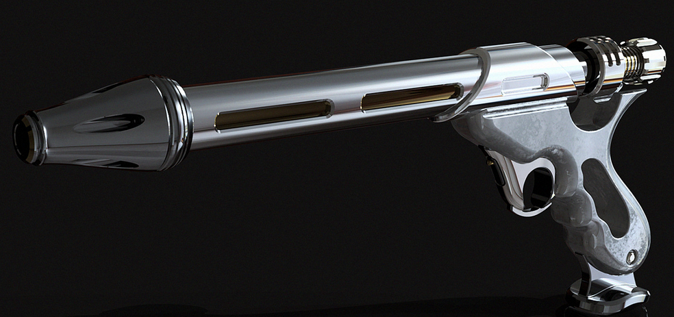
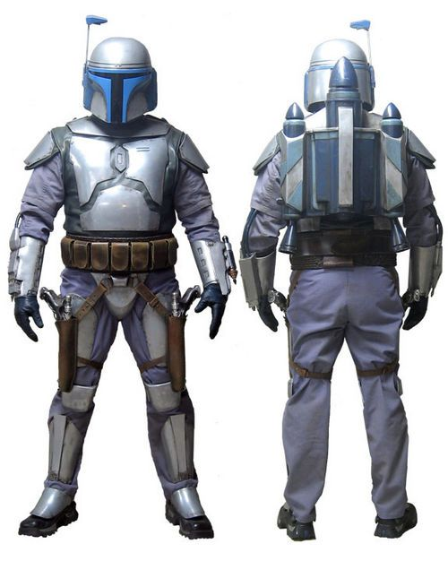
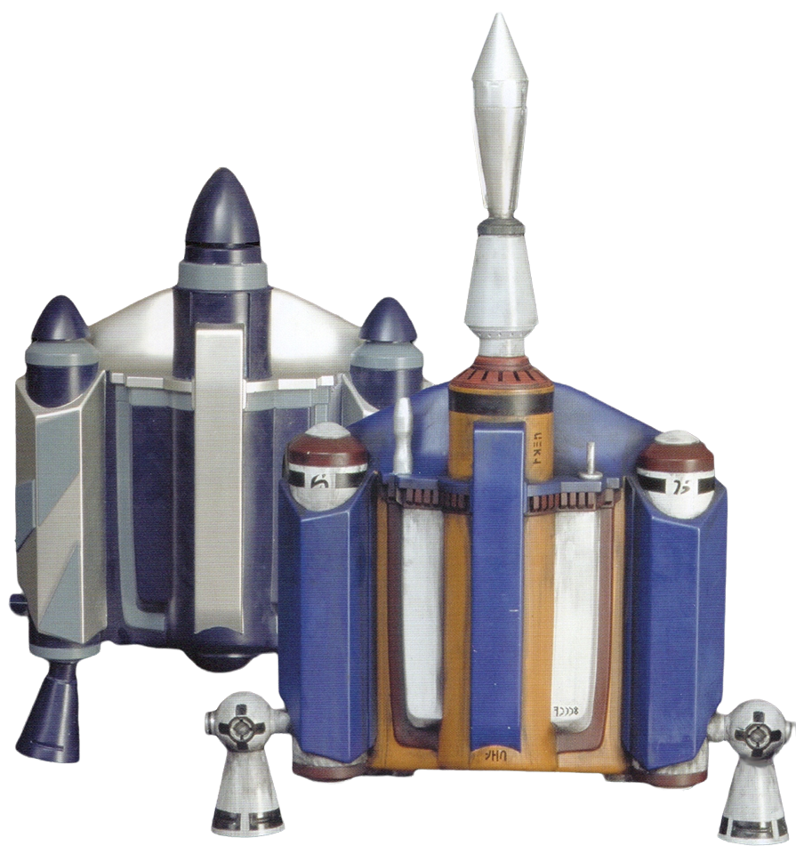
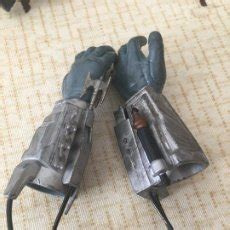

Jango Fett nació en el planeta Concord Down en el espacio galactico controlado por Mandalor,era Hijo de una familia de granjeros la cual fue afectada por Guerra Civil Mandaloriana,Jango quedó huerfano a sus 11 años por dicha guerra pero fue adoptado por el Mandaloriano Jester Merel el cual fue su mentor hasta su muerte en la batalla de Korda Six,despues de la muerte de quien fue su segundo padre,Jango Fett comando a un grupo de Mandalorianos a Galidraan donde fueron traicionado por Tor Vizsla,Jango y su grupo se tuvieron que enfrentar a un ejercito de jedi donde Jango demostro su superioridad venciendo a 6 Jedi con sus manos y ser el unico superviviente antes de ser capturado por el Padawan Dooku,despues de la Guerra,Jango,se convirtio en el mejor Cazarrecompensas de la galaxia a tal punto que se convirtio en el donante para el gran Ejercito Clon,como recompensa,Jango,pidió un clon sin alteraciones,un clon puro,una replica exacta de el,el cual lo nombraria como Boba Fett,Jango moriria en la Batalla de Geonosis decapitado por el Jedi Mace Windu Dejando de herencia a Boba Fett su armadura Mandaloriana,set de armas,nave y un diario con instrucciones de que hacer en caso de que Jango muera.
| Equipo | Nombre | Descripcion |
|---|---|---|
|  | Pistolas Blaster Westar-34 | Muy practcas para mantener una alta cadencia y mantener a raya a los ususarios de espada laser,facil de manejar en el JetPack |
|  | Armadura Mandaloriana de Beskar | Armadura que brinda proteccion a su usuario contra el fuego de blasters ligeros |
|  | JetPacks JT-12 y Z-6 |
|
|  | Muñequeras | Brazaletes con todo tipo de arsenal
|

Nave Patrullera de ataque la cual era un prototipo policial de la prision Oovo 4,Jango tuvo que robarla para poder escapar de la luna ya que su nave heredada fue destruida, es la unica de su clase ya que Jango destruyo la prision donde se guardavan los otros Prototipos